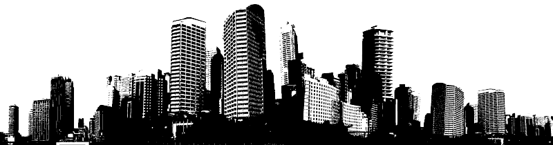

2025 г. 29 октября
Россия г. Москва

Снова иду домой по грязным улицам этого "не резинового" города. Толпы офисных муравьёв делают тоже самое. Час пик. Нет смысла идти на остановку или метро.
По последним данным перепеси, население столицы перевалило отметку сорока миллионов. Мне предстоит полтора часа пешего хода в "отличную" осеннюю погоду. +1, ветер, лужи. Всё как я люблю.
Ежедневные марш-броски на работу и обратно, хоть и не бегом, научили меня уводить мысли сразу же после осознания не легкого пути. Иногда можно было себя успокоить мыслью о том что наверняка кто то ходит и дальше меня. Но лучше конечно сразу подумать о своих делах, планах, мечтах. О чем угодно, но только не о рутинной офисной работе и дороге.